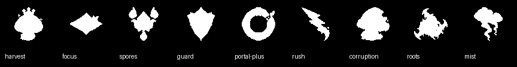
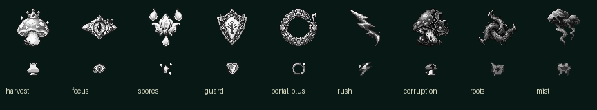

Artwork candidates only · Base 398ee52 · No live integration · Approval pending. PNGs are the visual source of truth. Field and HUD exports use original generated masters; 24 px LODs are separately pixel-authored. All enlargement is nearest-neighbour.
Runtime size simulation: initial 30×12 FIT WORLD V2, 1920×1080 desktop / 844×390 mobile. Uses existing geometry and asset-contract scale rules, with contain-fit to visible ink. This is not a playable game.
White alpha masks only. Portal hole is transparent. Recognition is a human gate, not an automated approval.


Nine candidates at calculated mobile ink footprint; no enlargement. Below: same lineup in grayscale.
Focus / Portal+: almond with pupil vs annulus with empty hole. Harvest / Corruption: shared mushroom family intentionally; crown/balanced cap vs broken shoulder/large crack. Spores / Mist: detached three satellites and flower vs connected heavy masses with tails. Guard / Roots: solid pointed shield vs open twisted thorn knot. No identical broad silhouette found in these pairs; Harvest / Corruption is the closest family resemblance. LOD decoration is intentionally reduced; instant recognition remains unapproved.
Common anchors: field/idle (32,32); LOD (12,12); HUD (16,16); food field (24,24). These are fixed canvas anchors, not recalculated centers of moving subparts. Asset validation JSON · Exact 40-PNG inventory · Built-in imagegen prompt set
| Object | Field ink | Desktop ink px | Mobile ink px | Mobile choice |
|---|